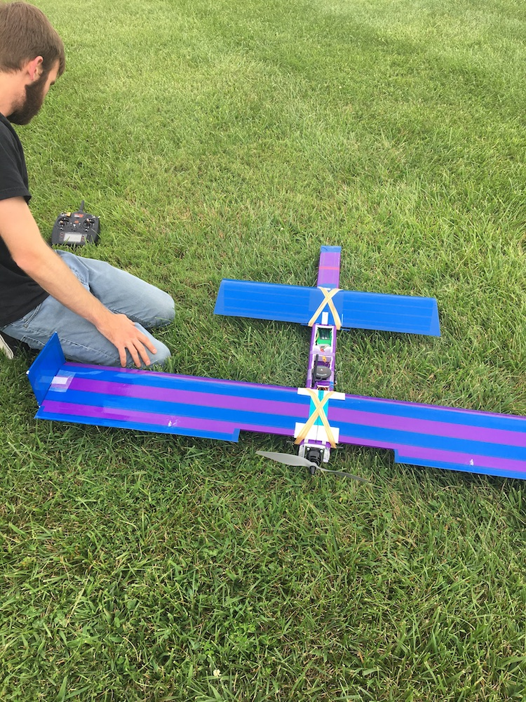
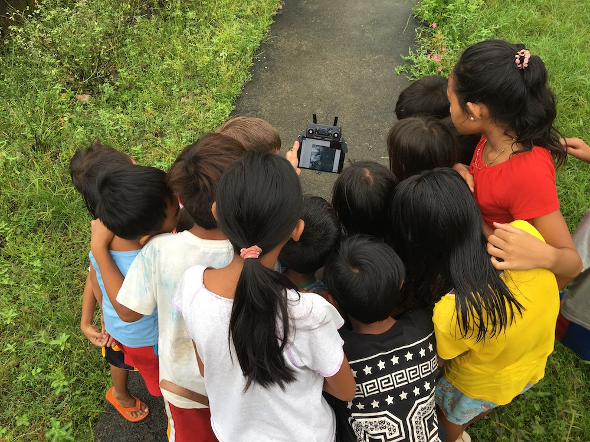

I enjoy learning by doing; it is a theme throughout my work and interests. I love open source projects because they let me explore things hands-on and also participate with passionate communities that have come together to solve a problem. I like building my own skills, sharing with others, supporting systems to curate and maintain data, and creating technology calibrated to users.
Keychain and coasters I laser-cut to promote a software project.
I've regularly deployed to support the Red Cross Red Crescent global network in disater response. I'm an information management specialist so focus on identifying, collecting, cleaning, and analyzing data about the situtation and from responding teams to then produce information products that improve planning, coordination, and decision making.
One of the rare times I was away from a spreadsheet or data table during a disaster response.
I love ODK. The people involved in the project are friendly, principled, and have made so much good work possible through their efforts building and sustaining open source mobile data collection software. While at American Red Cross, I've organized funding support to ODK in 2019 and 2022. I also regularly encourage people to use the software, including advocating (succesfully) for the Turkish Red Crescent and IFRC to use ODK for the data collection needs of the Emergency Social Safety Net (ESSN) programme.
I am a vocal champion of the impact possible with ODK, for example organizing a panel for IFRC's 2021 Data & Digital Week.
I regularly answer support questions on the ODK forum and have provided more than 100 verified solutions.
Since 2018 I have served on the ODK Technical Advisory Board to bring the perspective of a large humanitarian organization to the discussions around the future of the project.
I run an instance of ODK Central for my team at Red Cross.
Meeting some of the core ODK community in Seattle in 2019.
I love street level imagery, and the potential to use it for understanding an environment, documenting changes, and unlocking additional geospatial details. I'm a regular contributor of imagery to Mapillary (2.4 million images and counting) and have also pushed images to KartaView (formally OpenStreetCam).
I've written about and talked about why street level imagery interests me in a humanitarian context.
A custom rig for collecting street-level imagery in four directions while driving.
I love OSM and lead how the American Red Cross engages on the Missing Maps project, and my team explores how we can be a better user and steward of the map.
I am regular mapping contributor to OSM as user danbjoseph.
I've organized development of a new mission type in MapSwipe and am part of the team looking at the future of the app.
I enjoy being part of the OpenDroneMap (ODM) community.
I help maintain the user documentation including implemented a translation workflow integrating Transifex and GitHub.
I scoped with stakeholders and identified funding for the development of code in ODM that allows distributing the tasks of processing a large collection of aerial images across multiple nodes.
Computer hardware set up to remotely process drone imagery for a mapping project in the Philippines.
In 2016 I started experimenting with DIY drones for mapping and have more recently worked with a Red Cross volunteer to document the build process for a custom quadplane drone for mapping.
Troubleshooting a drone built from foam-core board.
I've written about drones - Aid from the Air: A review of drone use in the RCRC global network and Images from above: A review of aerial assessment in support of humanitarian response operations.
I founded the IFRC Drones Working Group which is both establishing the processes and standards for Red Cross and Red Crescent National Societies to deploy drones in global operations, as well as building a community of practice. I organize regular learn/ share sessions for the Red Cross Red Crescent global network.
A crowd of curious onlookers while flying a drone for a mapping project in cooperation with the Philippine Red Cross.
In addition to code and tech, I enjoy getting my hands dirty in soil growing flowers, herbs, fruits, and vegetables. I live in DC and have limited outdoor space for plants, but I make it work with a variety of containers and a drip irrigation system so I can do more with my time during the heat of the summer than just water each day.
A bountiful harvest of home-grown basil just before I made it into pesto.